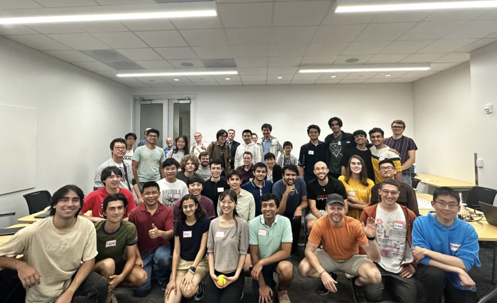
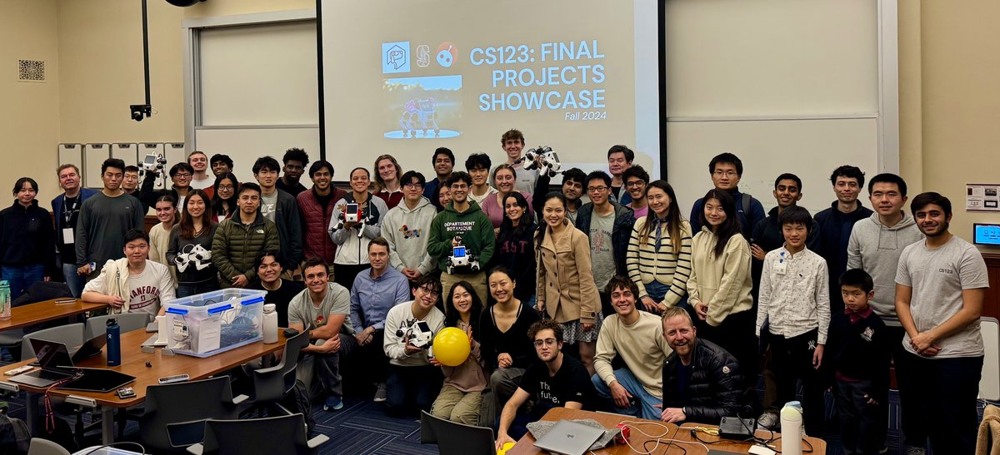
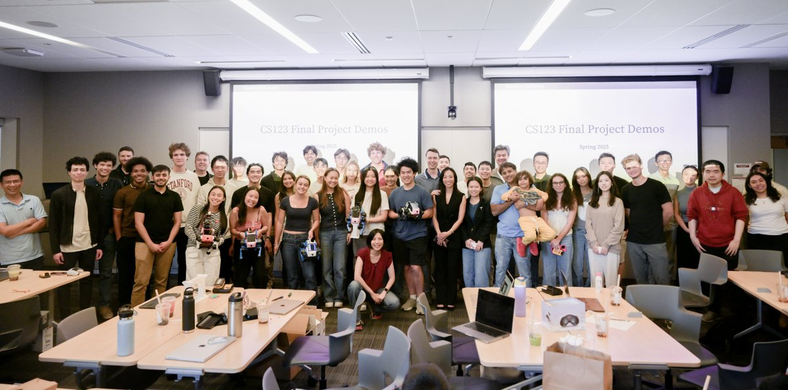

CS 123: A Hands-On Introduction to Building AI-Enabled Robots
With Hands-On Robotics and Prof. Karen Liu, I have designed an undergraduate introductory AI robotics course, transforming a Robotics Club project into something much bigger. As Head Teaching Assistant over the past three years since the course's inception, I helped transform Pupper into an educational platform in CS 123: A Hands-On Introduction to Building AI-Enabled Robots. We have also been featured by the Stanford Report.
The course teaches robotics fundamentals through hands-on construction and programming, covering motor control, kinematics, and walking algorithms. Students also explore cutting-edge topics in reinforcement learning, computer vision, and large language models for robotics. The course has now taught over 150 students, and each quarter culminates in a demo day where students showcase their projects to industry professionals and robotics researchers from academia.


